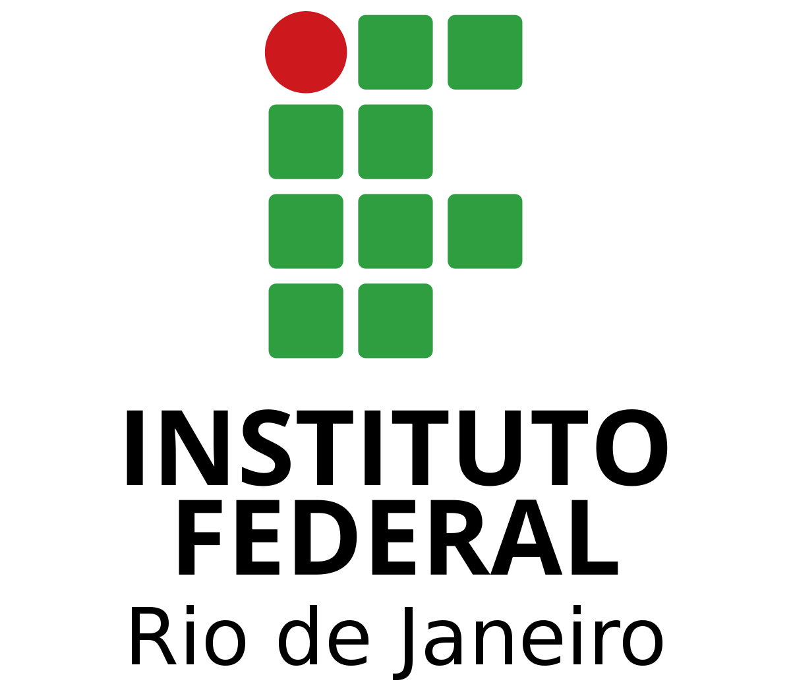

CURRÍCULO ELETRÔNICO
Espaço destinado para me apresentar como profissional de desenvolvimento de softwares, compartilhando minha formação, tecnologias aprendidas, e criações feitas.

Meu nome é João Pedro Lopes Guimarães, sou graduando em Bacharelado em Sistemas de Informação pelo Centro Universitário Geraldo di Biase (UGB), e também formado em Técnico em Informática integrado ao Ensino Médio pelo Instituto Federal do Rio de Janeiro - Campus Pinheiral (IFRJ). Iniciei minha jornada em informática visando a manutenção de computadores, contudo, ao primeiro contato com programação, foi amor a primeira vista. Sempre busco explorar novas tecnologias para me aprimorar como profissional e como o eterno estudante que sou
-
Centro Universitário Geraldo Di Biase
Bacharelado em Sistemas de Informação
Em curso - 6° período
-

Instituto Federal do Rio de Janeiro - Campus Pinheiral
Técnico em Informática integrado ao Ensino Médio
Concluído
-

Alura
Cursos independentes
-
Udemy
Cursos independentes